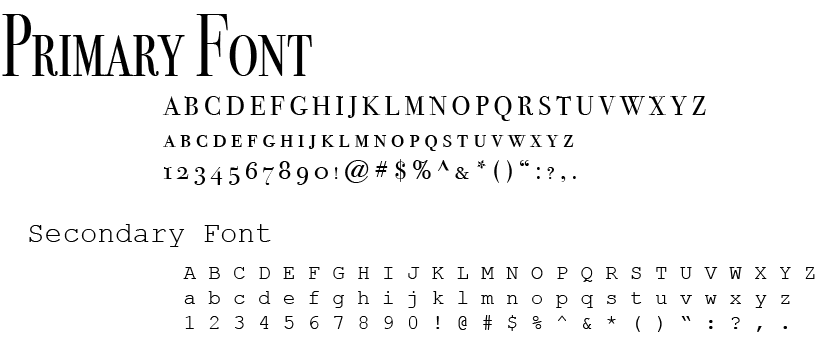
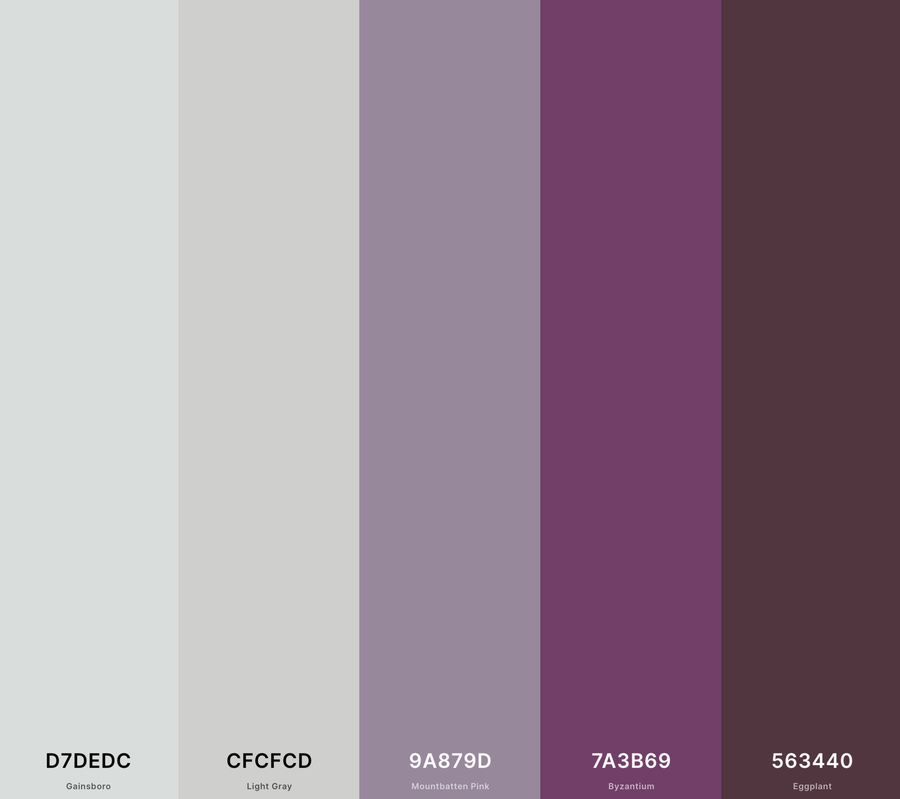

{kind=link}
Target market
Who is my auidence for this project.
My concept for this assignment was to look into data protection and the sharing of information on the internet, I wanted to specifically focus on "nudes" or sharing of intimate images. This is a link to a video that inspired me about the whole idea. knowledge on the internet's data privacy is pretty limited for people and i would like to inform and tell people a bit more about what happens when they share private information online. Social media was one of my biggest focuses, specifically image sharing on things like Snapchat. Users can send a photo on Snapchat and set a time limit for how long someone can view the image for, in doing so users believe that after this allotted time the image will delete itself. This however is not the case as it stores data which means the photo doesn't just simply delete or disappear it sits in a computer for up to 30 days in which it could get accessed, without even mentioning the concept of screenshotting the image. This is a link to an article talking about sophies angles and also angel shots. I got inspiration from this business idea and the guardian angel looking after you inspired the idea from branding that I had.
This is the logo I created for the Check your Consent website, there are angel wings signifying the guardian angel concept that I had and there are two checks on the back which are structural supports for the wings but also signifying the checking your consent, and finally the C’s that are connected to the ticks, representing the C’s in the name. 
This is the fonts that I have chosen for my website, my primary and secondary fonts. I wanted quite basic and clear fonts as I am talking about a quite serious topic and don't want the font to be too complicated. So by keeping it simple you can focus more on the topic. 
This is the colour pallete that I chose for my website. I liked the purple as it kept the colours simple and basic. This meant that there were lots of variations that I could do for my website. It keeps the message clear and focused on the topic. 
This is the webpage flow for my website design having many aspects to it, one of the exciting ideas is a public space exhibition, so some sort of design interaction piece in a public space. I was thinking of what makes people look at something and something that popped up as an idea was mirrors, people love looking at themselves and also fits well into the idea of consent in image sharing and privacy.

Who is my auidence for this project.
Young women is my main focus for this as they are often the main focus, and can be seen as vunerable.
they are also a primary focus as they can be stereotyped as sending the images.
Again they are another group of people to focus on.
By teaching younger people such as children these things they grow up with the knowledge already.
{kind=link}
{kind=link}
{kind=link}